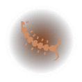
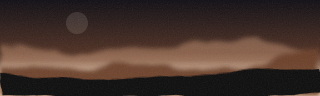
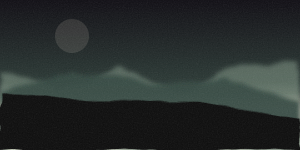
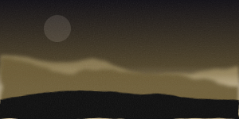
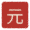
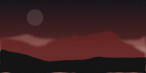
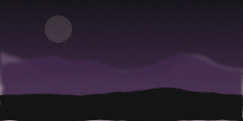
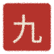

The ink direction. What 九境 looks like if it stops being lit by neon and starts being painted. Every drawing on this page is generated from the game's own tables, so none of it is a promise the code cannot keep.
Bruno, on the first prompt kit: "não me dá muito intuito de xianxia/wuxia e demasiado neon." The fault is older than the prompts. The game is cyan to magenta on blue-black, which is a science fiction palette wearing Chinese characters. A cultivation story is not lit by neon: it is ink on silk, gold leaf, cinnabar on a seal, jade, and a great deal of empty paper.
The ramp keeps its one job, which is that a realm must be readable from its colour alone without reading a word. What changes is the road it walks. Jade, then gold, then cinnabar, then imperial violet: green is the first breath and the body, gold is the core, red is the furnace and the tribulation, and violet is what is left after all of it. Every one of these is a pigment somebody ground.
The ensō is a circle painted in one breath and left open where the brush lifted. It is the oldest mark in the tradition this game is set in, it crops a picture to a circle the way the game's frame already does, and it is drawn rather than downloaded. It still reads the save: the sweep is heavier and the opening smaller the deeper the thing inside it.


狩The list is the same list. What changed is that it happens somewhere: a wash of the realm's own mountains above it, the rows on warm dark paper instead of blue, and gold instead of cyan for the one number that matters.
Ink mountains, three washes deep, with the realm's own pigment in the middle distance and a cinnabar seal stamped in the corner. All of it generated: the ridges are seeded by the realm, so a realm's mountains are always its own.





A cinnabar seal is the most recognisable object in this whole tradition and the game already has the shape of one. Stamped in a corner it does what a logo does, and it costs one function.

An emblem for a Chinese cultivation game, in the manner of a carved seal and an ink brush. A single ensō, a circle painted in one brush stroke and left open where the brush lifted, in worn gold leaf on a deep ink ground. Inside the circle, very small and centred, the silhouette of a seated figure in meditation, painted in soot black with a dry brush. Around the outside of the circle, nine small cinnabar red dots evenly spaced, like the nine marks of a seal. Aged silk texture, mineral pigment, no gradients, no glow, no neon, no 3D, no bevel. Flat, painted, austere, symmetrical, with generous empty margin. Square 1:1. No text, no letters, no Chinese characters, no watermark.
The old style block asked for a near-black void, rim light and a single strong hue, which is a description of neon. This one asks for silk, mineral pigment and empty space, and it says out loud what the pictures are supposed to feel like: a plate from a bestiary somebody believed in six hundred years ago.
Style: classical Chinese ink painting on aged silk. Wet brush, visible strokes, ink bleeding into the fibre, large areas of empty paper. Muted mineral pigment only: jade green, gold leaf, cinnabar red, bone white, soot black. No neon, no glow, no rim light, no lens flare, no science fiction, no cyberpunk. Nothing emits light except a lantern or the moon. Composition in the Song dynasty manner: the subject small against a great deal of empty space, mist swallowing the middle distance. It should look like a plate from a bestiary somebody believed in six hundred years ago. No text, no letters, no characters, no seal, no watermark, no border.
Stone Puppet, the guardian of its mountain: ancient, enormous, unbothered, seen from below through mist so that its full size is never shown at once. Painted in ink with copper as the only colour in the picture (#C9713F), used sparingly, on a warm dark ground. Style: classical Chinese ink painting on aged silk. Wet brush, visible strokes, ink bleeding into the fibre, large areas of empty paper. Muted mineral pigment only: jade green, gold leaf, cinnabar red, bone white, soot black. No neon, no glow, no rim light, no lens flare, no science fiction, no cyberpunk. Nothing emits light except a lantern or the moon. Composition in the Song dynasty manner: the subject small against a great deal of empty space, mist swallowing the middle distance. It should look like a plate from a bestiary somebody believed in six hundred years ago. No text, no letters, no characters, no seal, no watermark, no border.
Green Serpent, a wild spirit-beast, caught mid-turn as it notices a traveller. Painted in ink with celadon as the only colour in the picture (#7BA382), used sparingly, on a warm dark ground. Style: classical Chinese ink painting on aged silk. Wet brush, visible strokes, ink bleeding into the fibre, large areas of empty paper. Muted mineral pigment only: jade green, gold leaf, cinnabar red, bone white, soot black. No neon, no glow, no rim light, no lens flare, no science fiction, no cyberpunk. Nothing emits light except a lantern or the moon. Composition in the Song dynasty manner: the subject small against a great deal of empty space, mist swallowing the middle distance. It should look like a plate from a bestiary somebody believed in six hundred years ago. No text, no letters, no characters, no seal, no watermark, no border.
| Change | Where | Size of it |
|---|---|---|
| The nine realm colours | src/data/realms.ts |
Nine hex values. Everything in the game reads the realm's colour from there, so the whole app re-dyes itself from one edit. |
| The five UI colours | src/app/theme.css |
Ground, panel, line, text, faint. An afternoon, plus a pass over every screen to find the places that hard-coded cyan. |
| The frame | src/art/plate.ts |
The ensō replaces the ring. One function, already written on this page. |
| The scenery | src/art/scene.ts |
Ink washes replace the gradient sky. The shape of the code is the same. |
| The paper | src/app/theme.css |
One turbulence filter over the ground, at very low opacity. It is the single cheapest thing on this list and it is most of what makes a screen feel painted. |